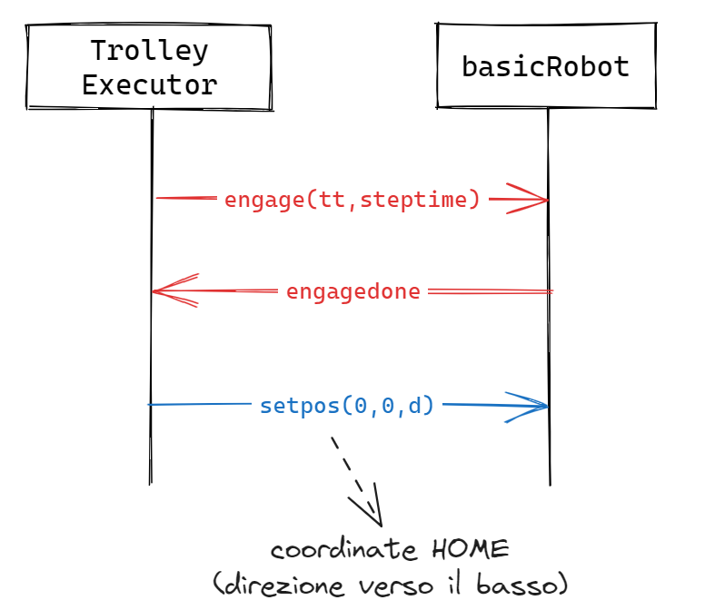
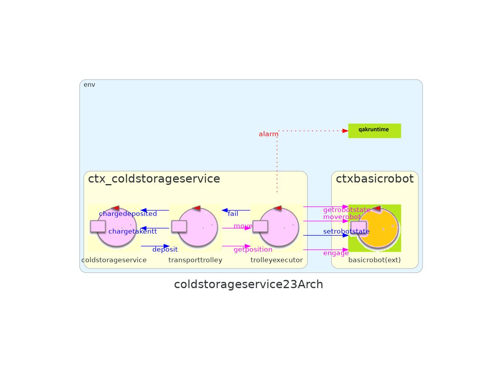

Introduction
All'interno di questo Sprint verrà analizzato il core-business dell'applicazione, esplicitato nello Sprint0 come l'interazione tra ColdStorageService (CSS) e TransportTrolley (TT).
Requirements
- Definire con precisione i componenti dell'applicazione, limitandosi al contesto di ColdStorageService e TransportTrolley
- Formulare il modello di interazione tra ColdStorageService e TransportTrolley
Requirement analysis
Dal documento dei requisiti, relativamente a questo Sprint, consideriamo i seguenti argomenti da trattare:
- Service area
- DDR robot e TransportTrolley
- Interazione tra il CSS ed il TT
Entità
| Entità | Comportamento |
|---|---|
| coldstorageservice | Gestisce le richieste di deposito e comanda il transport trolley con istruzioni di alto livello, mantiene la rappresentazione della service area |
| transporttrolley | Gestisce le richieste del ColdStorageService inviando comandi di basso livello al basicRobot |
| serviceaccessguisim | Entità adibita al testing, l'arrivo di un camion a INDOOR e invia una richiesta a coldstorageservice per dare inizio alla fase di deposito. |
| basicrobot | Entità che riceve istruzioni di "medio livello" e le traduce in istruzioni di basso livello per guidare il DDR robot. |
Dati
Di seguito, sono elencati tutti i dati presenti nei requisiti, con annessa una breve descrizione.
| Dato | Tipologia | Descrizione |
|---|---|---|
| MAXW | Costante, float | Limite massimo di chilogrammi che la ColdRoom può contenere in un dato momento. |
| RD | Costante, intera | Lunghezza del lato del transport trolley. |
| FW | Variabile, float | Quantità di carico che un camion refrigerato deve depositare, espressa in chilogrammi. |
| TTState | Enumerativo | Tre valori che rappresentano i possibili stati in cui si puà trovare il transport trolley (in HOME, in movimento e fermo): HOME, MOVING, STOPPED |
| currentTTState | Variabile, enumerativo | Stato attuale del transport trolley, di tipo TTState |
Messaggi
| Mittente | Destinatario | Tipologia messaggio | Formato | Significato |
|---|---|---|---|---|
| serviceaccessguisim | coldstorageservice | Request | storerequest(FW) | Richiesta di storage di FW chili di cibo. |
| coldstorageservice | serviceaccessguisim | Reply | loadaccept() | La richiesta di deposito è stata accettata. |
| coldstorageservice | serviceaccessguisim | Reply | loadreject() | La richiesta è stata rifiutata. |
| coldstorageservice | serviceaccessguisim | Dispatch | chargetaken() | Il transport trolley ha comunicato di aver prelevato il carico, il camion deve spostarsi da INDOOR. |
| transporttrolley | coldstorageservice | Dispatch | chargetakentt() | Il carico è stato prelevato dal transport trolley. |
| transporttrolley | coldstorageservice | Dispatch | chargedeposited() | Il carico è stato depositato nella ColdRoom. |
| coldstorageservice | transporttrolley | Dispatch | deposit() | Il CSS comunica al TransportTrolley che deve recarsi a INDOOR, prendere il carico e portare alla ColdRoom |
Dopo un incontro con il committente, che comunica di non avere preferenze a riguardo, abbiamo deciso di proseguire l'analisi basandoci sul secondo modello proposto nel modello dei requisiti delineato nello Sprint0: il messaggio charge taken sarà quindi modellato con semantica dispatch.
Vediamo che l'unico messaggio che viene inviato dalla ServiceAccessGUISim corrisponde alla richiesta di deposito (storerequest(FW)). Questa decisione si basa sul fatto che in questo Sprint non verrrà trattata la questione dei ticket (fuori dalla core-business logic); perciò avremo che, a seguito di un'eventuale accettazione della richiesta di deposito (storeaccept()), si passerà direttamente alla logica applicativa che la implementa.
Componenti
ServiceAccessGUISim
Come detto, in questo Sprint concentreremo l'attenzione sui componenti che implementano la core business logic del sistema e, nonostante non ne faccia direttamente parte, avremo necessità di definire la ServiceAccessGUI per testare il funzionamento della logica applicativa. Ecco perchè, come anticipato nello Sprint0, verrà modellata come un simulatore che invia una storerequest al ColdStorageService.
L'analisi approfondita di questo componente sarà considerata negli sprint successivi.
TransportTrolley e DDRRobot
Il TT è una entità astratta che aggiunge funzionalità di più alto livello ad un DDR robot (come riportato dai requisiti). Queste funzionalità sono:
- trasportare un carico di cibo da INDOOR a ColdRoom;
- recarsi in HOME quando non sono presenti richieste;
- comunicare il proprio stato a entità interessate.
- comunicare all'utente Camion refrigerato che è stato prelevato il carico
Queste funzionalità condividono un requisito fondamentale: la possibilità di navigare la service area. Sarà quindi necessario crearne una rappresentazione comprensibile al componente che controllerà il robot concreto. Nei successivi paragrafi verrà affrontato questo aspetto.
In questa fase dello sviluppo il DDR Robot sarà rappresentato da un robot virtuale, disponibile alla nostra software house, che offre una visualizzazione di un robot virtuale che naviga una service area (anch'essa virtuale) e gestisce gli stessi comandi di "medio livello" che il DDR Robot è in grado di gestire.
ColdStorageService
È stata discussa con il committente la questione dell'allontanamento del camion refrigerato dalla INDOOR: il messaggio chargetaken conferma il completamento del ritiro del carico da parte del transport trolley, in tal momento il camion deve allontanarsi immediatamente. In caso di richiesta rifiutata il camion si deve allontanare alla ricezione del messaggio storerejected.
Dall'ultimo incontro con il committente è emerso che il DDR Robot impiega un tempo predefinito per prelevare un carico dal camion.
Service area
Dall'analisi dei requisiti dello sprint precedente abbiamo modellato la service area come un rettangolo contenente aree di interesse:
- HOME: quadrato di lato RD che identifica la posizione di partenza del transport trolley, è collocato sopra alla zona evidenziata;
- ColdRoom: area di dimensione non non ancora definita, rappresenta la ColdRoom dove il transport trolley deve depositrare i carichi;
- INDOOR: posizione lungo la parete inferiore adiacente alla parete sinistra, il transport trolley deve recarsi in quest'area per prelevare i carichi da i camion;
- PORT: posizione lungo il bordo inferiore dell'area della ColdRoom, il transport trolley deve posizionarsi in questa area per scaricare i carichi nella ColdRoom

Problem analysis
Componenti
ServiceAccessGUISim
Dobbiamo realizzare un componente software che permetta di simulare molteplici richieste di deposito presso il CSS. In particolare, avremo bisogno di un'applicativo che ci permetta di:
- effettuare una richiesta di deposito verso il CSS, specificando la quantità di chilogrammi di cibo FW
- visualizzare la risposta relativa alla richiesta appena effettuata (accettata o rifiutata)
- solo in caso di richiesta accettata, visualizzare il messaggio di presa in carico
Come anticipato precedentemente nella sezione componenti, il Camion si deve allontanare anche in caso di richiesta rifiutata, quindi anche in questo casò si dovrà aggiornare la vista dell'applicazione per permettere una nuova interazione.
Per quanto riguarda le tecnologie d'implementazione, pensiamo che un applicazione web sia l'ideale per realizzare questo componente software, per via della sua comodità d'uso e per la possibilità di passare ad un contesto distribuito in modo molto semplice.
ColdStorageService
Il CSS si occupa solo di:
- accettare/rifiutare la richiesta di deposito
- notificare il TransportTrolley della presenza di un nuovo carico
- notificare la ServiceAccessGUISim della presa in carico da parte del TT (messaggio chargetaken)
Uno dei principali problemi riguarda appunto la rappresentazione dell'area di servizio, che influisce sull'interazione con il robot e su come esso si muove all'interno della stanza.
Service area
A seguito di questa analisi approfondita sull'area di servizio, possiamo aggiungere un nuovo dato, oltre a quelli presenti nella tabella dei dati sopra riportata.
| Dato | Tipologia | Descrizione |
|---|---|---|
| currentTTPosition | Variabile, tupla di interi | Posizione del transport trolley nella service area, in coordinate x e y secondo lo schema del modello della service area. |
Abbiamo deciso di suddividere la service area in una griglia di quadrati di lato RD: ogni posizione sulla griglia può contenere il DDR robot.
La rappresentazione della service area diventa quindi come in figura, si noti il sistema di assi cartesiani che pone il punto (0, 0) in corrispondenza della posizione HOME, che corrisponde alla posizione di partenza.
I punti di interesse INDOOR e PORT finora sono stati modellati come posizioni monodimensionali, in quanto si tratta di "aperture" al quale il robot puà accedere, in questo modello verranno indicati come "la posizione in cui il robot deve trovarsi per potervi accedere".
Dal punto di vista del transport trolley la service area sarà rappresentata da una matrice NxM.
Per generare una mappa della service area abbiamo sfruttato il software unibo.mapperQak23 che si avvale di basicrobot per esplorare ottenere la dimensione dell'area e individuare eventuali ostacoli lungo i bordi, generando una rappresentazione della service area.
Utilizzo del mapper
Per utilizzare il mapper per generare la matrice che rappresenta la service area, senza considerare gli ostacoli:-
Avviare WEnv, l'ambiente virtuale che simula il DDR robot:
docker compose -f projects/it.unibo.virtualRobot2023/virtualRobot23.yaml up
-
Avviare basicrobot:
projects/unibo.basicrobot23/gradlew run
-
Avviare il mapper:
projects/unibo.mapperQak23/gradlew run
- Un file testuale contenente una rappresentazione della mappa.
|r, 1, 1, 1, 1, 1, 1, |1, 0, 0, 0, 0, 0, 1, |1, 0, 0, 0, 0, 0, 1, |1, 0, 0, 0, 0, 0, 1, |1, 1, 1, 1, 1, 1, 1,
- Un file binario contenente una istanza della classe
unibo.planner23.model.RoomMap, utilizzabile in coppia con una istanza della classeunibo.planner23.Planner23Util
Configurazione landmark
Per permettere a un utente di configurare la posizione dei landmark di interesse nella service area verrà messo a disposizione un applicativo che espone una interfaccia grafica per posizionare i punti di interesse in una griglia.
Questo applicativo genererà rappresentazioni testuali e un file binario utilizzabile dal planner per creare i percorsi di movimento del transport trolley.
Di seguito è riportato un esempio del contenuto del file di testo che verrà generato dall'applicativo. Questo file in particolare non sarà utilizzato da nessun componente del sistema, ma rappresenta la configurazione creata dall'utente.
|H, 1, 1, 1, 1, 1, 1, |1, 0, 0, 0, C, C, 1, |1, 0, 0, 0, C, C, 1, |1, 0, 0, 0, P, P, 1, |I, I, I, 1, 1, 1, 1,
In questo sprint verrà implementato un simulatore si ServiceAccessGUI che non gestirà l'inserimento del ticket, questa funzionalità verrà analizzata nel prossimo sprint, tuttavia verrà implementata una versione del ColdStorageService in grado di gestire richieste di deposito concorrenti.
TransportTrolley & DDR Robot
Il DDR Robot è il punto finale della catena di core-business, l'entità che esegue le azioni di deposito. Possiamo quindi pensarlo come il vero "robot", che potrebbe essere reale o virtuale.
D'altra parte, il Transport Trolley è un concetto più astratto, che racchiude la logica e controlla il Robot DDR.
All'interno del ColdStorageService opererà quindi l'entità TransportTrolley, occupandosi di tutte le funzionalità descritte in fase di analisi dei requisiti. Questa entità astratta dovrà comunicare con il "vero" robot per implementare il movimento e le azioni da compiere.
Entra quindi in gioco l'attore QAK BasicRobot, fornito dal committente all'interno del progetto unibo.basicroboot23. In questo modo, otteniamo anche un ambiente virtuale per simulare il comportamento del DDR Robot (WEnv/VirtualRobot).
Basic robot
L'attore QAK BasicRobot, contestualmente alla core-business di questo Sprint, si occuperà di implementare il movimento tra i vari landmarks della Service Area.
Tra le entità da noi definite, il TransportTrolley è l'unico a comunicare con il suddetto attore: necessiterà di tre messaggi per attuare gli spostamenti:
- engage(OWNER, STEPTIME): in fase di inizializzazione, specificando al basicrobot chi lo sta usando (per ottenere l'accesso esclusivo) e qual è lo STEPTIME
- setpos(X,Y,D): al successo dell'engage il transportrolley invia questo messaggio al basicrobot per comunicare la posizione e direzione attuali del virtualrobot: il basicrobot manterrà internamento lo stato del robot basandosi su questa inizializzazione
- moverobot(TARGETX, TARGETY): per realizzare il movimento all'interno della Service Area.
Nota Essendo che il BasicRobot necessità di coordinate per muoversi, il TransportTrolley deve conoscerle obbligatoriamente. In particolare, deve avere a disposizione il mapping landmarks-coordinate.
Interazioni
Di seguito, vengono riportare le interazioni presenti tra le componenti d'interesse, che realizzano il core-business dell'applicazione.
| Mittente | Destinatario | Tipologia messaggio | Formato | Significato |
|---|---|---|---|---|
| ServiceAccessGUI | ColdStorageService | Request | loadrequest(FW) | Richiesta di storage di FW chili di cibo |
| ColdStorageService | ServiceAccessGUI | Reply | loadaccepted | La richiesta è stata processata ed accettata |
| ColdStorageService | ServiceAccessGUI | Reply | loadrejected | La richiesta è stata processata e respinta |
| ColdStorageService | - | Event | chargetaken | Il carico è stato prelevato dal transport trolley, il camion può spostarsi da INDOOR |
| ColdStorageService | TransportTrolley | Dispatch | deposit(FW) | E' presente alla INDOOR un nuovo carico da prelevare |
| TransportTrolley | ColdStorageService | Dispatch | chargetakentt() | Il carico presente alla INDOOR è stato prelevato dal transport trolley |
| TransportTrolley | ColdStorageService | Dispatch | chargedeposited(FW) | Il carico preso dal transport trolley è stato depositato nella ColdRoom |
A queste, vengono aggiunte le interazioni presenti tra TransportTrolley e DDR Robot per realizzare il movimento vero e proprio (descritte nella sezione Basic robot).
Diagrammi di sequenza
Le frecce sono colorate in base al tipo di messaggio:
- request/reply
- dispatch
- event
Si riporta lo schema di funzionamento del core-business, supponendo che il carico venga accettato (in caso contrario il flusso si ferma).
Sono presenti anche i messaggi per i 3 movimenti che dovrà compiare il robot:
- raggiungere la INDOOR
- raggiungere la ColdRoom
- ritornare in posizione HOME
Di seguito, è presente invece la fase di inizializzazione tra TransportTrolley e DDR Robot.
Architettura logica
Trafiletto su contesti e attori prima dell'immagine dell'architettura.Test plans
Project
ServiceAccessGUISim
Come anticipato in fase di analisi del problema, si è pensato di implementare questo componente software come un'applicazione web.
Abbiamo deciso di sviluppare l'applicazione utilizzando il framework Spring Boot, sia poiché permette di aggiungere funzionalità in poco tempo, sia allo scopo di uniformare lo stack tecnologico utilizzato dal progetto nel suo insieme (utilizzeremo Spring anche all'interno del MapConfigurator).
Architettura dell'applicazione
Comunicazione con il ColdStorageService
Questa applicazione serve per accedere ai servizi forniti dal ColdStorageService. La comunicazione con esso è quindi di cruciale importanza.
Abbiamo decisio di implementare la comunicazione tra le due componenti software tramite il protocollo Coap. Questa scelta è stata mossa dal fatto che la nostra software house ha già sviluppato classi e interfacce per implementare un concetto generale di connessione tramite appunto il protocollo Coap, all'interno della libreria unibo.basicomm23.
Nello Sprint0 abbiamo poi parlato del concetto di attori e del linguaggio Qak. Infatti, un fattore fondamentale che ci ha spinto a scegliere Coap come protocollo di comunicazione è che ogni attore è definito come una risorsa CoapObservable (osservabile tramite la classe CoapObserver definita nella suddetta libreria).
Diagramma delle classi
Nell'immagine seguente viene mostrato il diagramma UML delle classi del back-end dell'applicazione Web.
Prendiamo in analisi i singoli componenti:
- SagController: WebServer Controller dell'applicazione definito tramite annotazione del framework SpringBoot. Si occupa di inizializzare l'applicazione definendo un osservatore sull'attore interessato; funge poi da mediatore tra UI e back-end per l'invio al ColdStorageService della richiesta di deposito.
- SagConnection: componente che si occupa di stabilire, tramite
unibo.basicomm23, una connessione Coap con l'attore interessato nel progetto ColdStorageService; permette poi di implementare la comunicazione con l'attore stesso relativamente alla richiesta di deposito. - ConnectionUtils: definisce una nuova CoapConnection.
- CoapObserver: osservatore che, ad ogni aggiornamento emesso dal ColdStorageService, avvisa tutte le entità registrate ad esso tramite WebSocket.
Per l'aggiornamento automatico della pagina da parte del server utilizziamo le WebSocket. Abbiamo infatti un file ws_utils.js che definisce la connessione e gestisce i messaggi in arrivo in maniera opportuna.
- WebSocketConfiguration: implementa la classe WebSocketConfigurer di
org.springframework.web.socket.config.annotation. - WebSocketHandler: memorizza le sessioni registrate e alle quali inviare i messaggi.
Configurazione
Alcuni importanti parametri dell'applicazione possono essere configurati dal file application.properties.

Oltre a poter configurare il nome dell'applicazione che apparirà in alto nella pagina web e il banner da mostrare in console, sono presenti:
- server.port, per configurare la porta sulla quale apparirà la pagina web
- actor.name, per definire il nome dell'attore da osservare e al quale verrà inviata la richiesta di deposito
- actor.ctx.*, per specificare tutte le informazioni relative al contesto in cui è presente l'attore d'interesse
Front-end
Per la realizzazione della grafica dell'applicazione si fa uso di Bootstrap, una libreria utile per realizzare pagine web reattive e mobile-first, con HTML, CSS e JavaScript;

L'applicazione permette di inserire una quantità numerica che rappresenta i kg di carico da depositare e, previa validazione dell'input con eventuale toast di errore, invia la richiesta al ColdStorageService.
A questo punto possono presentarsi tre casi:
- richiesta accettata: l'utente viene notificato dell'accettazione della richiesta, indicandogli di attendere la presa in carico.
In questo contesto, due casi sono possibili:
- se passa troppo tempo, il messaggio viene dato per perso, avvisando l'utente e ricaricando la pagina
- arriva il messaggio di presa in carico, che viene mostrato in pagina, per poi ricaricarla
- richiesta rifiutata: l'utente viene avvisato del rifiuto e la pagina web si ricarica, permettendo una nuova interazione.
- errore in fase di richiesta: se la richiesta non va a buon fine o passa troppo tempo, l'utente viene notificato e la pagina web si ricarica, permettendo una nuova interazione.
ColdStorageService
Si riporta di seguito l'architettura logica del ColdStorageService.
Gli attori coldstorageservice e transporttrolley in questa versione risiedono nello stesso contesto.
coldstorageservice
coldstorageservice è incaricato di comunicare con la ServiceAccessGUISim: gestisce la richiesta di deposito accettandola se la ColdRoom può contenere il carico richiesto, rifiutandola altrimenti. A questo scopo si utilizzano le variabili e constanti:
val maxColdRoom: Float: mantiene il peso massimo che la ColdRoom può contenerevar currentColdRoom: Float: memorizza il peso corrente contenuto nella ColdRoom
updateResource per notificare gli observer, e quindi la ServiceAccessGUISim, che il carico è stato prelevato.
transporttrolley
Il transporttrolley è incaricato di comunicare al basicrobot dove dovrà spostare il VirtualRobot.
All'inizializzazione viene ingaggiato il basicrobot tramite engage, viene poi usato setrobotstate per impostare la posizione iniziale a (0,0) direzione d.
Quando riceve un messaggio deposit l'attore comunica al basicrobot di spostarsi a INDOOR tramite il messaggio moverobot, successivamente comunica a coldstorageservice che il carico è stato prelevato con il messaggio chargetakentt, muove poi il basicrobot in ColdRoom, comunincando infine l'avvenuto deposito con il messaggio chargedeposited.
Durante uno qualsiasi degli stati che l'attore assume durante lo spostamento è in grado di gestire un messaggio deposit tramite interrupt, aggiungendolo a una coda per gestirlo quando possibile.
CI SONO DEI RAGIONAMENTI DA FARE:
MapConfigurator
MapConfigurator è una applicazione grafica web che permette a un utente di creare una configurazione per la disposizione dei punti di interesse nella service area.
Come per la ServiceAccessGUI Simulata utilizziamo il framework Spring Boot.


Le feature principali dell'applicazione includono:
- blocchi trascinabili: la griglia viene compilata trascinando i blocchi che rappresentano i landmark con una funzionalità di drag and drop;
- griglia ridimensionabile: è possibile ridimensionare la griglia tramite gli slider in alto, la dimensione di default è quella individuata utilizzando
unibo.mapperQak23 - persistenza: l'utente troverà la configurazione creata salvata tra sessioni, permettendo di riprendere la modifica dove era stata lasciata
- utilizzo intuitivo: l'applicazione deve essere semplice da utilizzare nascondendo i dettagli della rappresentazione utilizzata dal planner
I blocchi trascinati sulla mappa vengono considerati come esplorati e, nel caso del blocco della ColdRoom marcati come ostacoli nella rappresentazione sotto forma di unibo.planner23.model.RoomMap.
Questa applicazione è completa nel rispetto delle funzionalità di base che abbiamo considerato necessarie, è possibile tuttavia che in futuro verrà estesa con feature di utilità aggiuntive.
Diagramma delle classi
Di seguito si riporta il diagramma UML delle classi dell'applicazione.

Testing
Deployment
Distribuzione
Per il deployment di queste applicazioni si è deciso di utilizzare Docker, questo ci permetterà di uniformare la metodologia di gestione della distribuzione dei vari componenti del servizio.
In particolare abbiamo creato dei Dockerfile, utilizzando l'apposito linguaggio dichiarativo, usati poi per creare le immagini che faranno parte dei container che eseguono i servizi.
Si riporta di seguito il Dockerfile usato per generare l'immagine di mapConfigurator.
FROM openjdk:11
EXPOSE 8015
VOLUME ["/data"]
ADD ./build/distributions/unibo.mapConfigurator-boot-2.2.tar /
WORKDIR unibo.mapConfigurator-boot-2.2/bin
CMD ["bash", "./unibo.mapConfigurator"]Allo scopo di velocizzare la creazione dei Dockerfile e delle rispettive immagini abbiamo implementato una serie di task Gradle che automatizzano questo compito, è possibile visualizzare queste task in un qualsiasi file build.gradle.kts (esempio)
Tutte le immagini relative a questo progetto saranno rese disponibili online a questo profilo Docker Hub
Controllo
Dato il numero elevato di servizi da gestire verrà progettata e messa a disposizione del cliente una applicazione dedicata alla gestione dei componenti del servizio, permetterà di manipolare impostazioni e valori di default delle applicazioni tramite una interfaccia grafica.